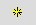
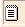

Sõnaartikli loomine
Uus artikkel luuakse kollase tärniga nupu abil (Lisa artikkel). Ilmuvasse aknasse sisesta uus märksõna, vajadusel ka homonüüminumber (araabia numbriga). Toimetamisalal avaneb uus artikkel, kus vastavalt skeemile on mõned lahtrid ette täidetud. Ülejäänud lahtrid on tühjad või tuleb need ise avada selle välja ees oleva noolenupuga . (Kui mõni avamist vajav väli võiks olla igas uues artiklis algusest peale lahti, määra ta Skeemieditoris põhielemendiks (pane talle linnuke Põhielemendiks); vt Skeemi genereerimine -- Elemendi ja atribuudi tegemine nähtavaks.) Kui element sisaldab teisi elemente, mida kohe näha pole, klõpsa parempoolsel noolenupul , et luua puuduvad elemendid.
. (Kui mõni avamist vajav väli võiks olla igas uues artiklis algusest peale lahti, määra ta Skeemieditoris põhielemendiks (pane talle linnuke Põhielemendiks); vt Skeemi genereerimine -- Elemendi ja atribuudi tegemine nähtavaks.) Kui element sisaldab teisi elemente, mida kohe näha pole, klõpsa parempoolsel noolenupul , et luua puuduvad elemendid.Nende elementide ees, mida võib olla mitu, on nupp  - selle abil saad luua teise samanimelise elemendi käesoleva elemendi järele. Kui on vaja luua element käesoleva elemendi ette, siis kasuta paremklõpsu alt avanevat kontekstmenüüd (vt Sõnaartikli muutmine).
Kui sisestatud märksõna oli juba sõnastikus olemas ja selle sõnastiku puhul peab ta olema unikaalne (st sõnastiku sätetes on vastav linnuke, vt Sõnastiku sätted), siis ilmub teade, et selline märksõna ja homonüüminumbri kombinatsioon on juba olemas. Kui tegemist on homonüümiga, tuleb lisada homonüüminumber. Kui sõnal on ainult üks tähendus, siis salvestamisel kaob number (koos tühja sisu osaga) automaatselt.
Kõik vaates olevad mittevajalikud tähised ja tühjad üksused (sulud, kirjavahemärgid jms) kaovad töö käigus automaatselt. Pärast salvestamist artikli vaade korrastub.
Sõnaartikli toimetamise kohta vt edasi Sõnaartikli muutmine.
Salvestamise ja valideerimise kohta vt edasi Salvestamine, valideerimine ja veateated.